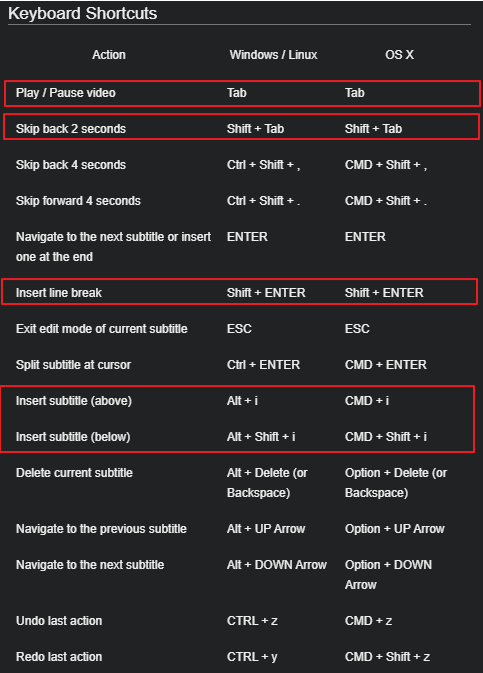

Amara를 이용해서 자막 만들기
Amara에 영상 등록하기
Amara에서는 유튜브의 영상 링크를 통해 영상을 등록한 뒤 자막 작업을 진행할 수 있습니다. 등록은 링크에서 할 수 있으며, 등록 절차는 아래와 같습니다.

Public항목의BEGIN을 누르면 아래Subtitle a Video가 생깁니다.- 자막을 만들고자 하는 영상의 링크를 유튜브에서 복사해서 붙여 넣고,
Begin을 누르면 영상이 Amara에 등록됩니다.
자막 생성하기

영상이 제대로 등록되면 위와 같은 화면으로 바뀝니다. 빨간 상자 안에 있는 Add a new language!를 눌러서 새로운 언어를 추가합니다.

위는 영상에 해당되는 언어, 아래는 자막을 생성할 언어입니다. 대부분은 한국어 영상이고, 한국어 자막을 만들 거니까 둘 다 한국어로 설정하면 됩니다.
자막 작업에 유용한 단축키

자막 작업 시작하기
- 준비된 영상 스크립트에서 문장 복사해서 붙여 넣기
- 한 문장씩 붙여넣고, 자막 가이드라인에 맞춰서 수정하기
- 전체를 붙여넣고 자막 가이드라인에 맞춰서 수정하기
- 영상을 재생하면서 자막 타이밍 맞추기
- 2단계에서 맞춘 타이밍을 전체적으로 보면서 틀린 곳이나 부자연스러운 곳이 있다면 보다 매끄럽게 조정하기